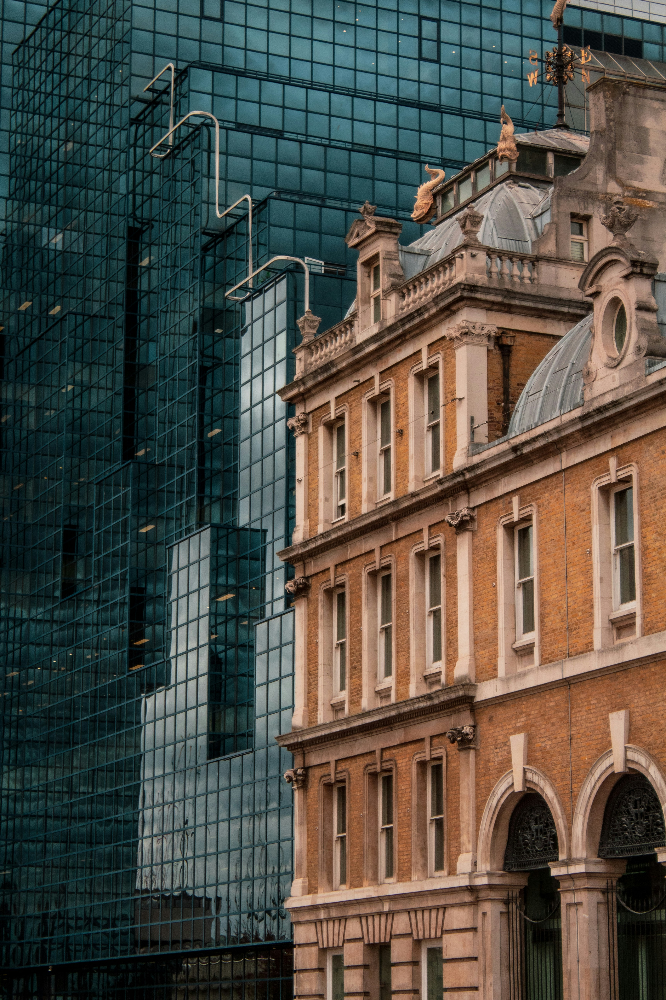
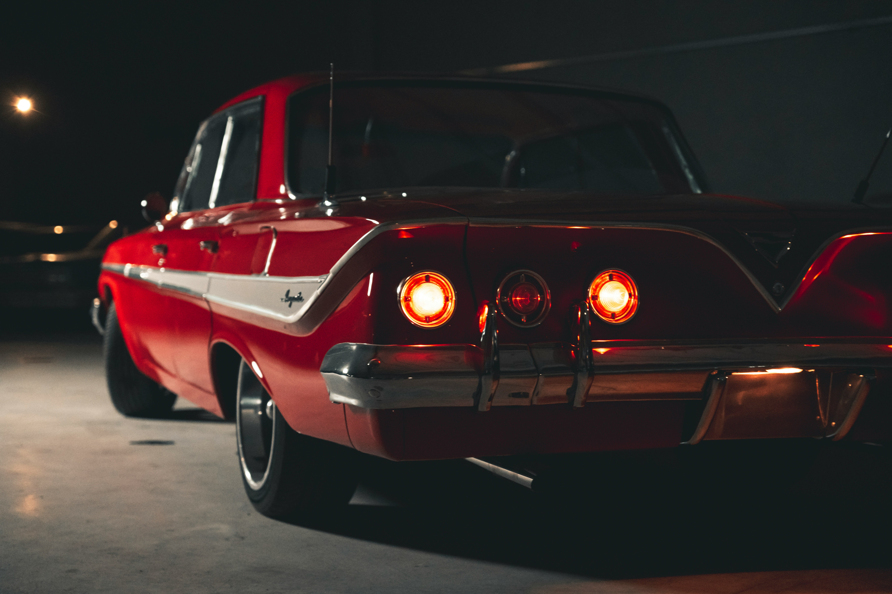

The Over-Simplification of Design
When looking at design of the past there are intricate patterns, beautiful graphics, and eye-catching details. Now every building is a concrete brick, everyone is wearing a white shirt and blue jeans, and packaging is all white with minimal text. There is nothing interesting, nothing intriguing everything is boring. It screams cheap.
One might argue that perhaps the consumer is driving this change in our society, maybe people want bland and boring products, and to an extent that is true. With the rise of unhealthy foods, many people associate simple packaging with the healthier option. I have fallen for this gimmick myself, but those clean packaged brands do not look appetizing. I do not want to eat plain cardboard cookies with a leaf on the front. I want someone that stands out, that looks interesting, and that looks like it will taste like cookies and not paper.
Consumers gravitate towards beauty in packaging, anyway, look at brands like Flow Knows and Mugler. I have seen so many reviews for Flower Knows and I have no idea how good the makeup product actually is, all I know is that it is gorgeous, and I want to buy it. You can also look at cities as a good example, how many people will care about one of the faceless ugly modern buildings the way they care about the New York City Public Library or the Smithsonian Castle? There are next to zero new buildings that will be remembered in a hundred years the ways those buildings are. Look at regular every day fashion as well, in 2020 everyone said maximalism was in, but their idea of maximalism was bright colors and a few funky prints. The clothes themselves were very minimalist as they are today. No one in real life and not on the internet dresses as interestingly as people did in the 70s, stores like Target and H&M where the average person shops have absolutely nothing interesting.
There has been a motto of simplicity in design for a long time, it is cheaper and more universally tolerated, no one loves it, but no one can hate it either. It is time to bring back beauty. Bring back the art noveau advertisements of the early 20th century, bring back carving and designs in architecture, and bring back clothes that tell you “this era was fun and interesting.” I understand that sometimes things can be too busy, but there are ways to make things intricate and not plain while being cohesive. Even things we do not expect to be beautiful like cars or children’s toys have become more plain.

Today, people are looking to the past like never before. Preferring older music, older fashions, older toys, and architectural styles, and it is not just nostalgia. Younger generations are also gravitating toward times before they were born. Even as I was searching for stock images for this post, it was clear what the effect of excessive minimalism has had. Brands have tried to convince us minimalism is better so they can cut costs on producing the same product, but we do not see those cut costs, they simply keep the extra profit. Instead of falling for their tactics choose to support artistry.